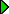
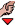

Alt er lukket og jeg har brug for hjælp her og nu:
 For meget alkohol og stoffer:
Åben, anonym rådgivning:
En jeg holder meget af er død, eller blevet alvorligt syg:
Jeg har spørgsmål om min krop:
Jeg har oplevet noget, der ikke var rart! - Nogen har gjort noget ved mig, jeg ikke kunne lide:
Jeg har spørgsmål om sex/sexualitet:
Jeg vil gerne finde et sted, hvor der er andre unge at være sammen med:
1. Vælg kategori(er)
2. Zoom ind på dit område (dobbeltklik på kortet)

3. Klik på hænderne for information
Se video:
JavaScript skal være slået til før du kan bruge dette site.
Slå Javascript til, og prøv igen..